Close-up showing the valve's built-in connection nodes.
Module 3 — Symbols | Pages 181–204
In the previous labs, you created individual graphic symbols for each mixer component — pumps, valves, agitator, level meter, and temperature sensor. Now it is time to bring them all together into a single, cohesive process display. In this lab, you will build the MixingProcess_Detailed symbol inside the $Mixer template, embedding every contained object's graphic through relative references, arranging them into a recognizable mixer process diagram, adding piping connectors, and labeling the display with the object's name and area.
Me.Pump1 is contained within $Mixer), you can embed their graphics into a container symbol using relative references. The Galaxy Browser's Relative References button gives you access to every contained object's symbols, so the references resolve automatically at runtime without hard-coding absolute paths.
Open the $Mixer template and create a new content item called MixingProcess_Detailed. In the Content pane, click the Edit Content button to open the Graphic Editor. You will now populate this blank canvas with symbols from each of the contained mixer components.
Right-click the canvas and select Embed Industrial Graphic. The Galaxy Browser opens. Click the Relative References button — this shows you all objects contained within $Mixer. Select Me.Pump1 and then choose the Pump_Detailed symbol. Place it on the canvas, leaving space at the top-left for text you will add later.
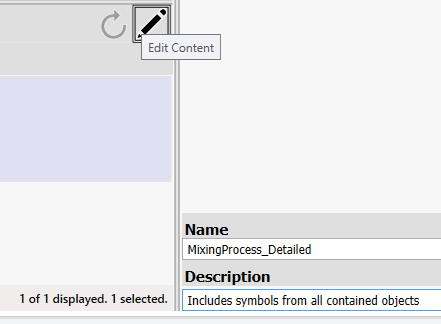
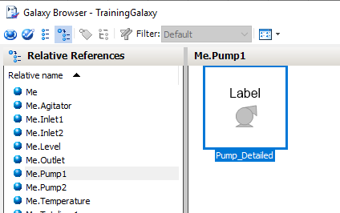
Repeat this process for every mixer component. Embed Me.Pump2\Pump_Detailed below the first pump, then add the remaining symbols: Me.Inlet1\Valve_Detailed, Me.Inlet2\Valve_Detailed, Me.Outlet\Valve_Detailed, Me.Agitator\Agitator_Detailed, Me.Level\Level_Detailed, and Me.Temperature\Temperature_Detailed. Arrange them to reflect the physical layout of the mixing process — two inlet lines with pumps and valves feeding into a central tank, with an agitator, level meter, and temperature sensor on the tank, and an outlet valve draining from the bottom.
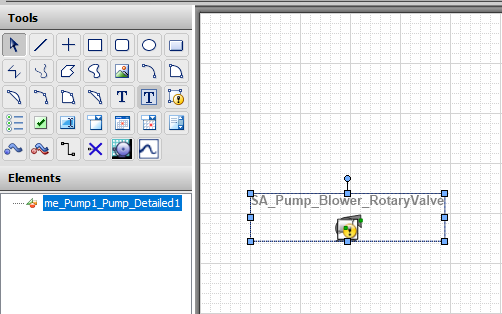
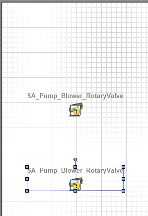
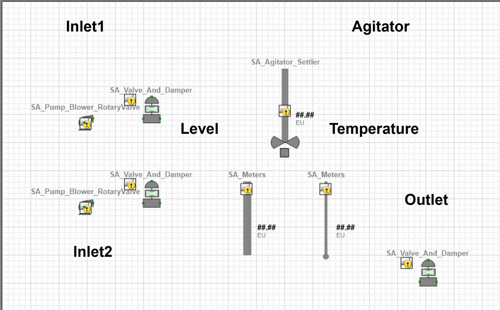
The individual component graphics need a visual container to tie them together. Search the Toolbox for sa_tank and drag the SA_Tank_Vessel element onto the canvas. Resize and reposition it so that it covers the agitator, level, and temperature graphics — this gives the visual impression that those instruments are mounted on the tank.
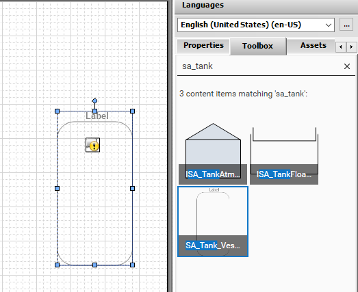
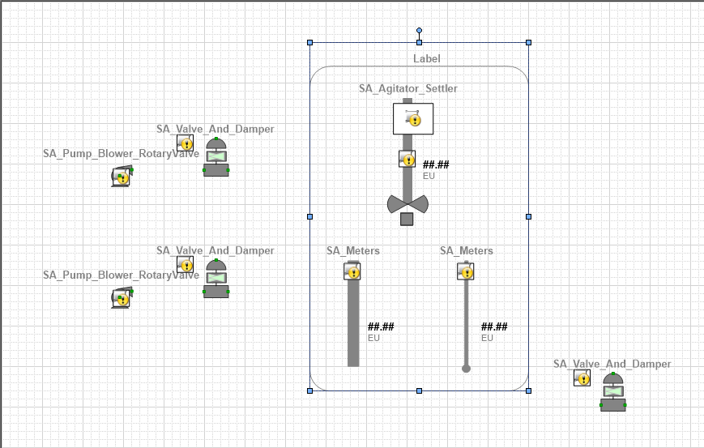
On the Properties tab, name the element Tank and set QualityStatusIndicator to False. Next, you need to change the tank's default label. Right-click the Tank element and select Substitute > Substitute Strings. In the dialog, change the Label value from its default to Mixer, then click OK. This is a quick way to customize embedded symbol text without opening the symbol's own editor.
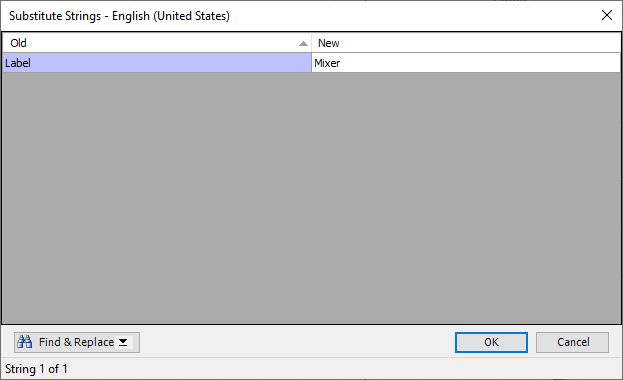
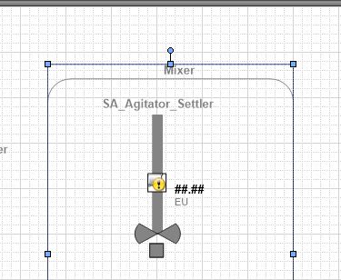
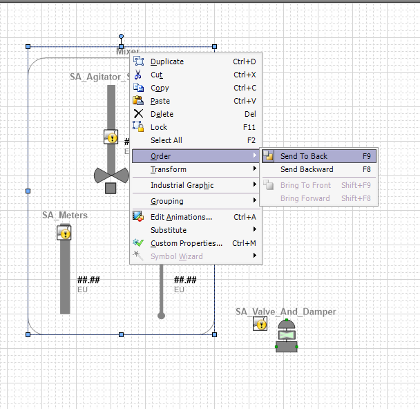
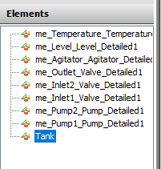
A process diagram is not complete without piping. In the Graphic Editor, connection points are the anchor locations on a graphic element where connectors (piping lines) attach. Every embedded graphic comes with default connection points on its bounding rectangle, but you can add custom ones for more precise routing.
First, set the canvas zoom to Fit and disable Snap to Grid so you can place connection points with precision. Double-click the Connection Point tool in the Tools pane — double-clicking keeps the tool active so you can place multiple points without reselecting it. Move the cursor to the left border of the Tank and align it with the built-in connection point on the right side of the Inlet1 valve. The tank border turns green when the cursor hovers over a valid placement zone. Click to place the connection point. Repeat for Inlet2.
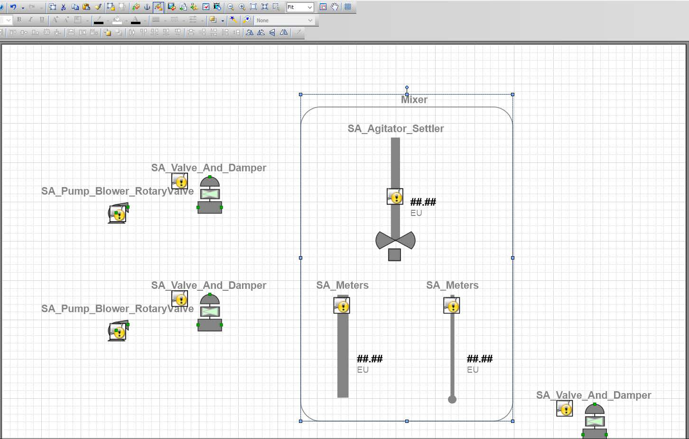
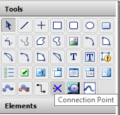
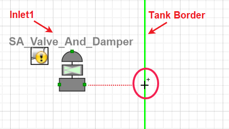
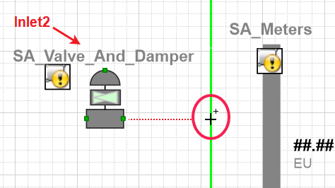
Now switch to the Connector tool (also double-click it to keep it active). Draw a connector from the Tank's bottom-center connection point to the Outlet valve's left-side connection point. Then connect Pump1 to Inlet1 (Valve1), and Valve1 to its adjacent Tank connection point. Repeat for the Pump2–Inlet2–Tank path.
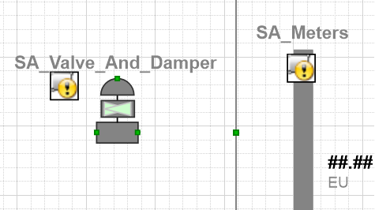
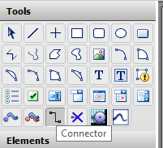
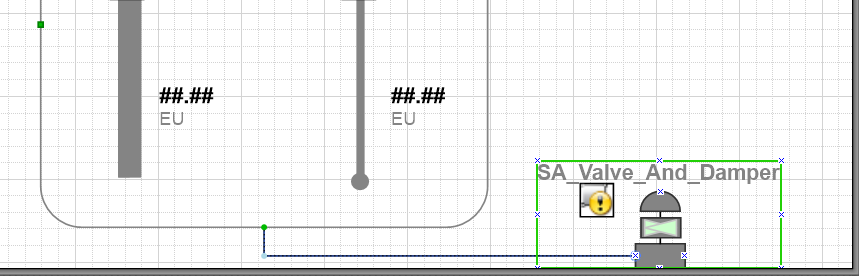
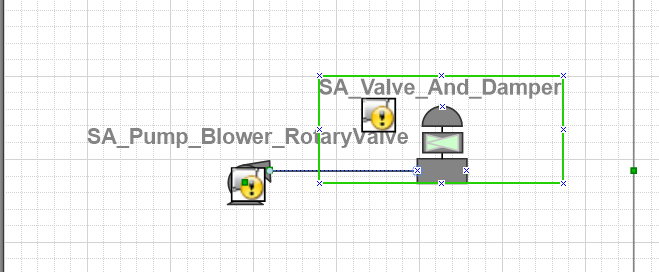
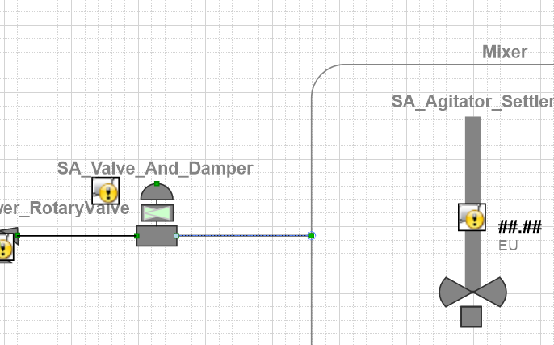
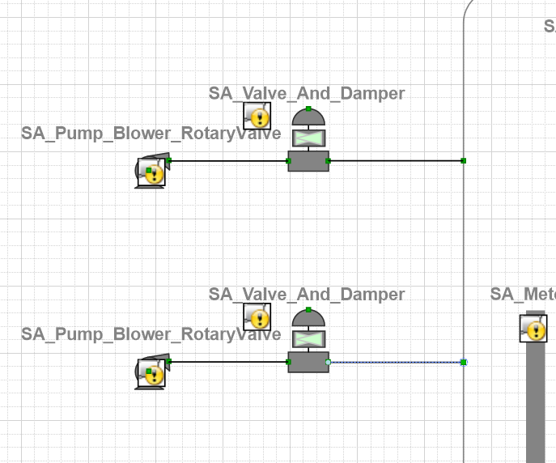
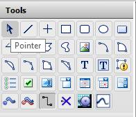
By default, connectors use bent routing. To make the piping look cleaner, select the four intermediate connectors (Connector2 through Connector5) in the Elements panel, and on the Properties tab change ConnectionType to Straight. This removes the bends. You may then need to use the arrow keys to nudge the pumps and valves into alignment so the straight lines look neat.
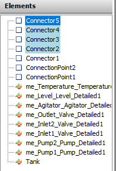
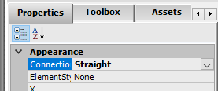
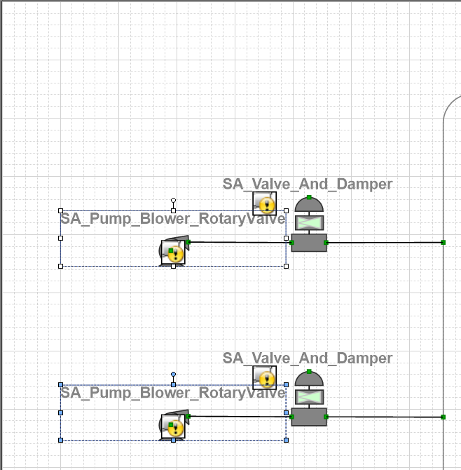
A professional display needs to identify which mixer is being shown and which area it belongs to. Select the Text tool, click at the top-left of the canvas, and type Object Name on the first line and Area Name on the second line. Click the canvas to finish text entry.
Now configure the first text element: select it, name it ObjectName on the Properties tab, and set its ElementStyle to Title. Do the same for the second text element — name it AreaName and set its ElementStyle to Heading. These styles ensure visual consistency with Galaxy-wide standards.
Me.Area, it displays the object's area assignment. This means the same symbol works for every mixer instance — no hard-coding required.
Double-click the ObjectName text element to open Edit Animations. Click Add Animation and select Value Display. In the States tab, choose Name and leave the name-to-display setting as Tag Name. This tells the animation to display the object's tag name (for example, Mixer100).
For the AreaName element, add a Value Display animation as well, but this time select the String state and enter Me.Area as the expression. This pulls the area assignment from the hosting object at runtime.
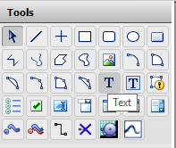
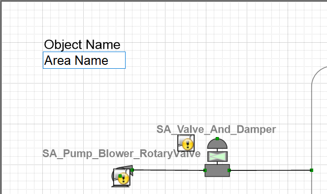
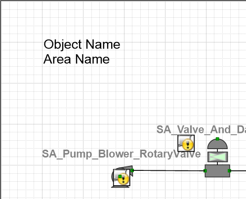
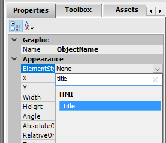
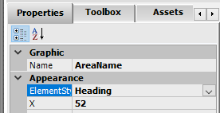
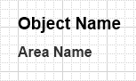
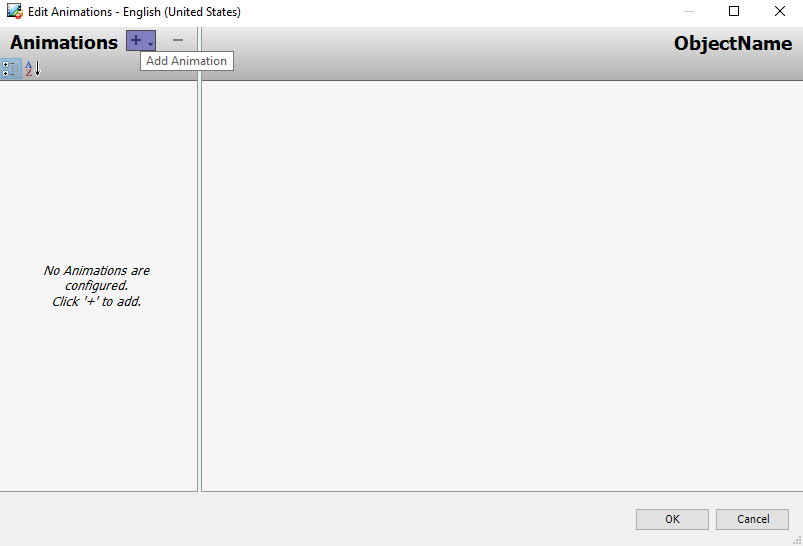
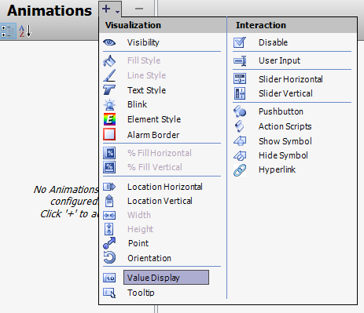
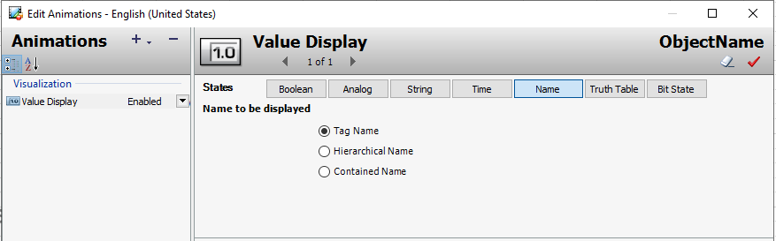
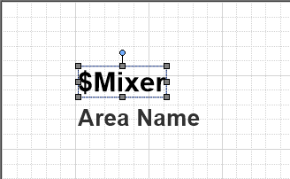

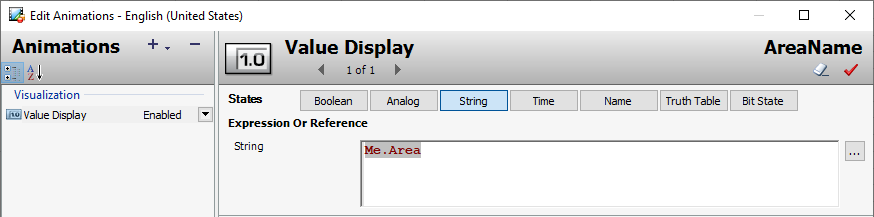
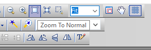
Re-enable Snap to Grid and click Zoom to Normal to restore standard view. Set the canvas Size property to Fixed and adjust the canvas boundaries so all elements are visible with a small margin of white space around the edges. Save and close the MixingProcess_Detailed graphic, then save, close, and check in the $Mixer template.
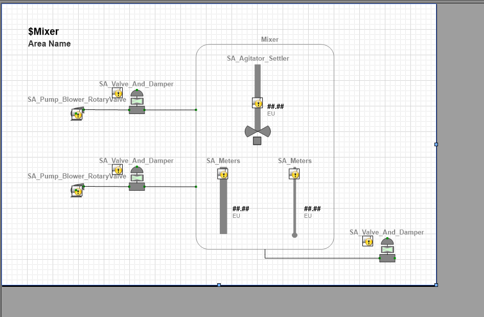
Now switch to WindowMaker and open the ContentDisplay window. Right-click and select Embed Industrial Graphic. In the Galaxy Browser, click Instances and navigate to Mixer100\MixingProcess_Detailed. Click OK. WindowMaker prompts you to confirm the replacement because a frame window can only host one embedded symbol — click Yes.
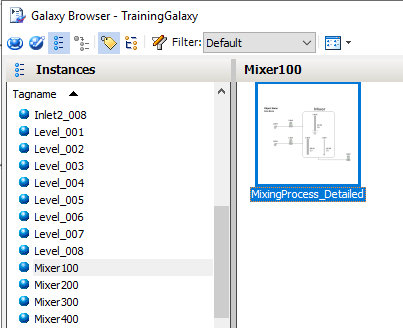
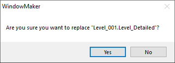
Click Runtime to test. The MixingProcess_Detailed graphic appears in the ContentDisplay window, showing the complete mixer process with live data from Mixer100. You should see the object name, area name, live level, temperature, agitator speed, and pump/valve statuses. Click Development! to return to WindowMaker when you are done verifying.
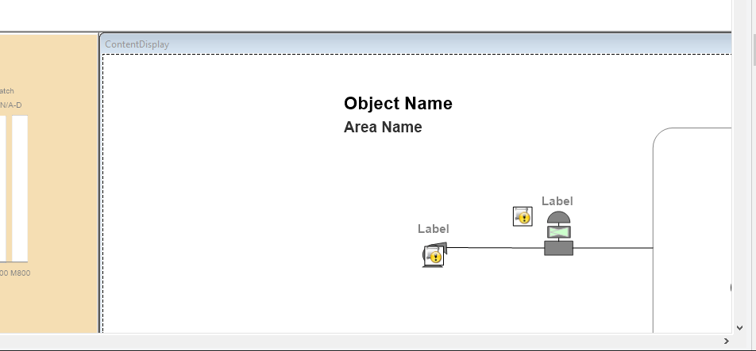
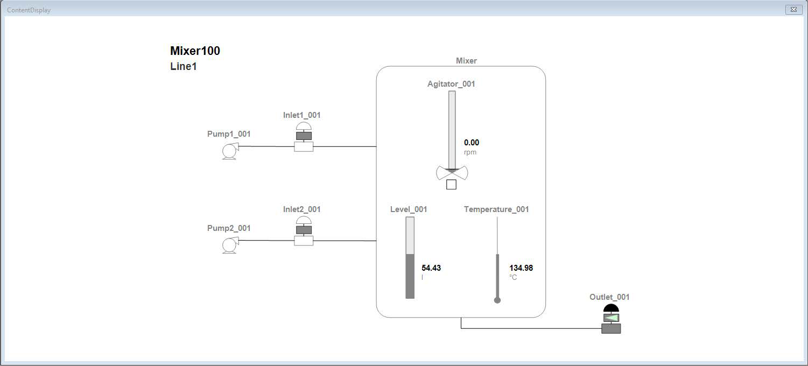
Relative references allow the same symbol to work across all instances of the container object. When you embed Me.Pump1\Pump_Detailed inside the $Mixer template, every Mixer instance (Mixer100, Mixer200, etc.) automatically resolves the reference to its own Pump1 — no reconfiguration needed.
Elements are rendered in the order they appear in the Elements panel — the last element added sits on top. When you place the Tank over the instruments, it covers them. "Send To Back" moves the Tank to the bottom of the z-order so the instruments render on top of it.
At runtime, the text element automatically displays the tag name (hierarchical name) of the object that hosts the symbol. For Mixer100, it would display "Mixer100"; for Mixer200, it would display "Mixer200" — the same symbol works for every instance.
Select the connector(s) in the Elements panel, then on the Properties tab set ConnectionType to Straight. Straight connectors are preferred for piping diagrams because they look cleaner and more representative of real pipe runs, especially in simple layouts with horizontal and vertical runs.
A frame window (like ContentDisplay) can only host one embedded industrial graphic at a time. When you embed a new symbol into a frame that already contains one, WindowMaker asks for confirmation because the previous symbol will be removed. Clicking Yes replaces the old graphic with the new one.
Module 3 — Symbols. AVEVA InTouch for System Platform 2023 Training.
Next: Lesson L17 — The OwningObject Property + Lab 8